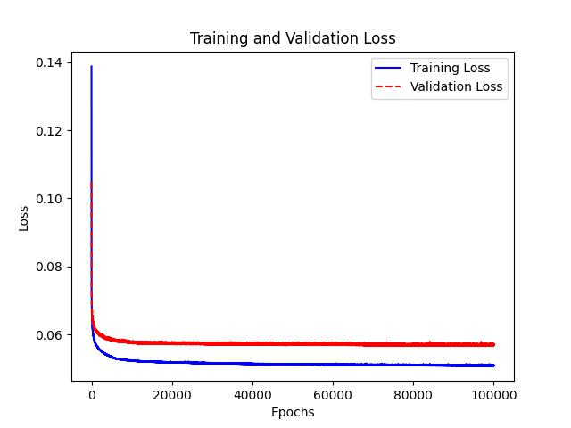

COMP4971C · Independent Work · Supervisor: Dr. Desmond Tsoi · Grade: A-
Can neural networks learn step-by-step algebraic manipulation?
Aaron Branson Cigres Li · HKUST · Summer 2023
Existing neurosymbolic models (Lample 2019, Charton 2021) predict final answers but treat reasoning as a black box.
Can we build a model that reasons one step at a time, producing transparent intermediate steps?
Train a neural network to predict the next algebraic manipulation step, not the final answer.
Chain predictions iteratively: output becomes input until the target expression is reached.
Expressions are converted through three stages before entering the model
Space limited to equations with 4 variables (A, B, C, D) and 2 operators (+, -, *, /)
| Dataset | Steps | Train | Test |
|---|---|---|---|
| x1 | 1 | 8,064 | 1,008 |
| x2 | 2 | 33,408 | 4,176 |
| x3 | 3 | 59,596 | 7,451 |
| x4 | 4 | 14,208 | 1,776 |
8:1:1 train/val/test split
Tested 4 to 9 layer feedforward networks. 5-layer model chosen — fastest convergence, smallest architecture.
Loss: MSE · Optimizer: Adam · 100K epochs

As training progresses, 1-step accuracy keeps improving while 4-step accuracy peaks then declines
| Epochs | x1 test (1-step) | x2 test (2-step) | x3 test (3-step) | x4 test (4-step) |
|---|---|---|---|---|
| 1,000 | 86% | 43% | 30% | 16.5% |
| 5,000 | 96% | 49% | 29% | 16.1% |
| 7,000 | 97% | 47% | 31% | 17.4% |
| 10,000 | 98% | 48% | 30% | 14.5% |
| 100,000 | 99% | 46% | 29% | 10.9% |
Novel overfitting symptom: not just a train/test gap, but a trade-off between short-term and long-term reasoning. x4 peaks at 7,000 epochs then declines by 37% at 100K, while x1 keeps climbing. Model selected at 7,000 epochs (sweet spot).
Feedforward models hit a ceiling. LSTMs are designed for sequential data processing — a natural fit for step-by-step reasoning.
| Dataset | FF @ 7K (test) | LSTM (test) |
|---|---|---|
| x1 (1-step) | 97% | 87% |
| x2 (2-step) | 47% | 86% |
| x3 (3-step) | 31% | 58% |
| x4 (4-step) | 17.4% | 33% |
| Overall | 39% | 64% |
FF results at sweet spot (7K epochs). LSTM nearly doubles multi-step accuracy.
Aaron Branson Cigres Li · HKUST COMP4971C · Supervisor: Dr. Desmond Tsoi